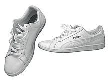

Puma SE is a German multinational corporation that designs and
manufactures athletic and casual footwear, apparel and accessories,
headquartered in Herzogenaurach, Bavaria, Germany. Puma is the third
largest sportswear manufacturer in the world.[5] The company was
founded in 1948 by Rudolf Dassler (1898 – 1974).
In 1924, Rudolf and his brother Adolf "Adi" Dassler had jointly formed
the company Gebrüder Dassler Schuhfabrik ('Dassler Brothers Shoe
Factory'). The relationship between the two brothers deteriorated
until they agreed to split in 1948, forming two separate entities,
Adidas and Puma. Following the split, Rudolf originally registered the
newly established company as Ruda (derived from Rudolf Dassler, as
Adidas was based on Adi Dassler), but later changed the name to Puma.
Puma's earliest logo consisted of a square and beast jumping through a
D, which was registered, along with the company's name, in 1948.
Puma's shoe and clothing designs feature the Puma logo and the
distinctive "Formstrip" which was introduced in 1958.
History
Christoph Dassler was a worker in a shoe factory, while his wife
Pauline ran a small laundry in the Franconian town of Herzogenaurach,
20 km (12.4 mi) from the city of Nuremberg. After leaving school,
their son, Rudolf Dassler, joined his father at the shoe factory. When
he returned from fighting in World War I, Rudolf was trained as a
salesman at a porcelain factory, and later in a leather trading
business in Nuremberg.[7]
In 1924, Rudolf and his younger brother, Adolf, nicknamed "Adi",
founded a shoe factory. They named the new business "Gebrüder Dassler
Schuhfabrik" (Dassler Brothers Shoe Factory) which was the only
business at the time that manufactured sports shoes. The pair started
their venture in their mother's laundry. At the time, electricity
supplies in the town were unreliable, and the brothers sometimes had
to use pedal power from a stationary bicycle to run their
equipment.[8] In 1927, they moved into a separate building. The
brothers drove from Bavaria to the 1936 Summer Olympics in Berlin with
a suitcase full of spikes and persuaded United States sprinter Jesse
Owens to use them, the first sponsorship for an African American.
Owens won four gold medals. Business boomed; the Dasslers were selling
200,000 pairs of shoes annually before World War II.[9] Both brothers
joined the Nazi Party, but Rudolf was a keen Nazi, who applied to
join, and was accepted into the Gestapo; they produced boots for the
Wehrmacht.[10][11] A growing rift between the brothers reached a
breaking point during a 1943 Allied bomb attack. Adi and his wife
climbed into a bomb shelter that Rudolf and his family were already
in. "Here are the bloody bastards again," Adi remarked, apparently
referring to the Allied war planes, but Rudolf, due to his apparent
insecurity, was convinced his brother meant him and his family.[12]
When Rudolf was later picked up by American soldiers and accused of
being a member of the Waffen SS, he was convinced that his brother had
turned him in
Split and creation of Puma

After increasingly different views of how to run the business, the
brothers split the business in 1948. Rudolf moved to the other side of
the Aurach River to start his own company. Adolf started his own
company using a name he formed using his nickname—Adi—and the first
three letters of his last name—Das—to establish Adidas. Rudolf created
a new firm that he called "Ruda", from "Ru" in Rudolf and "Da" in
Dassler.
A few months later, Rudolf's company changed its name to
Puma Schuhfabrik Rudolf Dassler.[13] Puma
and Adidas entered a fierce and bitter rivalry after the split. The
town of Herzogenaurach was divided on the issue, leading to the
nickname "the town of bent necks"—people looked down to see which
shoes strangers wore.[8] In the first football match after World War
II in 1948, several members of the West Germany national football team
wore Puma boots, including the scorer of West Germany's first post-war
goal, Herbert Burdenski.[14] Rudolf developed a football boot with
screw-in studs, called the "Super Atom" in collaboration with people
such as West Germany's national coach Sepp Herberger.